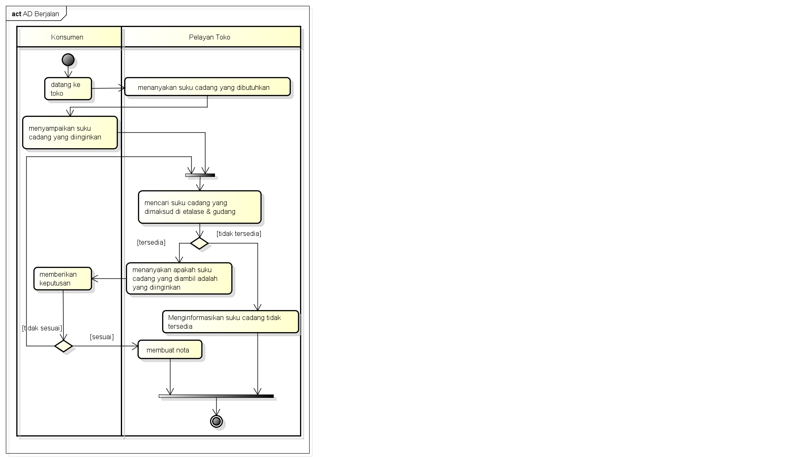

Berisi Saduran Matakuliah Analisis dan Perancangan RPL
Nama : Tekat Tri Wiyono
Nim : 1811500111
Kelompok : TI6J
Matkul : Analisis dan Perancangan PL
Berikut adalah saduran materi saya pada pertemuan ke-2
1.dosen mengingatkan kembali untuk selalu cerdas dan berjiwa luhur
2.dan juga bahwa dalam makul ini terbagi 3 platform yaitu classroom,youtubu,dan,telegram
3.dosen mengingatkan seperti pada pertemuan pertama bahwa Untuk tugas mahasiswa harus menyimpulkan materi yg di sampaikan
dan untuk UTS bersifat individu dan terkait dengan materi UML,dan UAS persentasi kelompok 3 orang
4.dosen menjelaskan sekenario perhitungan nilai kehadiran
5.dosen menjelaskan kembali cara membuat index.html di github
6.dosen memberikan contoh studi kasus dari laporan KP yaitu toko penjualan alat motor
7.dosen menjelaskan analisa sistem berjalan sesuai SOP
8.menerapkan analisa sistem berjalan ke aktivity diagram,software yg di gunakan Astah
9.Aktivity Diagram berhubungan Diagram Statechart,dengan kata lain diagram ini menunjukan bagaimana aktivitas-aktivitas bergantung satu sama lain
aktivity Diagram menggambarkan aktivitas sistem bukan apa yang dilakukan aktor
10.dosen mempraktekan bagaimana membuat Aktivity diagram berdasarkan studi kasus di Astah
11.mahasiswa juga harus membuat project astah untuk file tambahan di github sekaligus untuk belajar
untuk hasil file project Astah silahkan Klik->> Download
dibawah ini adalah contoh hasil gambar Aktivity Diagram:
